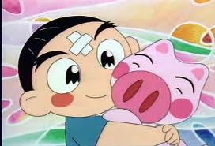

dreams
. Pig
养猪

鲁迅，我的偶像。几十年前他为了中国弃医从文。而现在，国内的食品安全问题让我揪心。我决定在30岁左右弃工从农，去当一个农民，建一个 现代化的，健康的养猪场。我要给猪起名字，每天带他们跑步，给他们听mozart，好让他们更聪明。不用饲料，包一片山，让他们自由自在生活。 学习linux，开放技术细节，带动中国养殖业的良性发展。这样才是放心的猪肉，才是我应该做的事，以此为鉴。